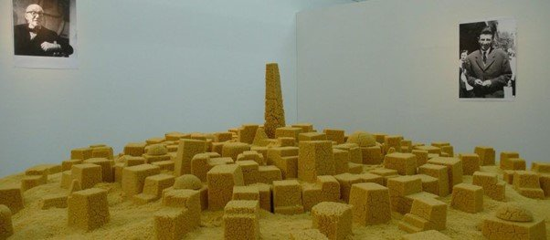
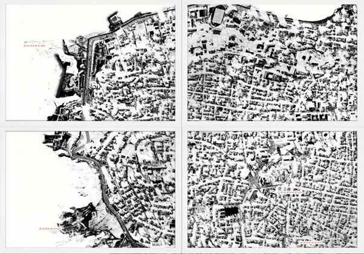
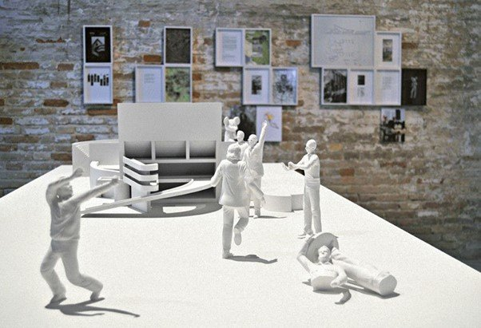
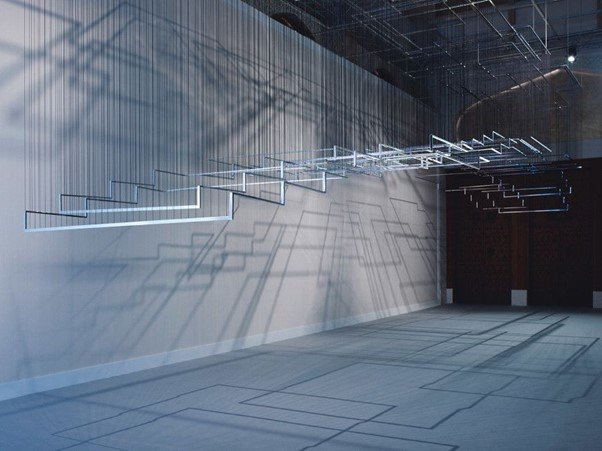
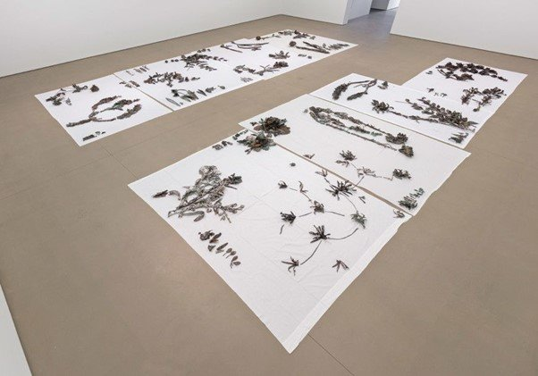

Originally published in Mada Masr on 25 October 2016
By Ismail Fayed
NEW YORK, USA — The Middle East North Africa show at the Guggenheim Museum, which was curated by Sara Raza and ran from April 29 to October 5, largely succeeded where every other survey of contemporary art from the region failed — that is, by thematically linking artworks beyond geographic commonality. And yet But a Storm Is Blowing from Paradise: Contemporary Art of the Middle East and North Africa left some important questions unsaid, specifically about the choice to display the chosen works in the context of the Guggenheim.

Kader Attia, Untitled (Ghardaia), 2009
Unlike the last survey of contemporary art from the Middle East and the Arab world in the same city, Here and Elsewhere (2014) at the New Museum, the exhibition's premise went beyond the immediate designation of "Middle Eastern" or "Arab." Raza, whose expertise lies more toward central Asia (she has curated shows such as the Tashkent Biennial: Quotations from Daily Life and Azerbaijan's Baku Public Art Festival: A Drop of Sky), chose geometry and architecture as its conceptual framework. These are themes already reflected in her curatorial practice, for example in her exhibition The Beginning of Thinking is Geometric (2013) at Sharjah's Maraya Art Centre. Raza explains in the exhibition statement that her interest in geometry comes from its possibility to be a "conduit for meaning" and to "intersect with the museum's unique architecture." Raza continues the postcolonial paradigm in thinking about the region by framing architecture, in its many forms, as an "ideological tool," used and abused by colonial powers to shape the region politically and economically.
There is no doubt about the devastation colonialism has wrought on the region, but the crucial questions are surely about agency: for example, what kind of futures the colonies themselves envision in light of independence. I question how relevant a political platform (postcolonial struggle) developed out of a certain political contingency (colonialism) is for the current diffusion of control through invisible forms. The fine line between fetishizing a pre-colonial past and lamenting the postcolonial present on the one hand, and critically looking at both of these in a way which allows the past to inform but not dictate the present, is the biggest challenge for anyone trying to think about the region and its history now.
To her credit, Raza's curatorial approach does make sense visually and in terms of subject matter — for the most part. Ali Cherri's Trembling Landscapes (2014-16), lithographs that show cities lying on both geographical and political fault lines, echoed Ahmed Matar's Disarm (2013), chromogenic transparencies of an ever-changing Mecca. The faded lithographs, mixing fiction and real information, intersected with Matar's transparencies in reflecting how landscapes shift through physical and external manifestations of sinister events, which can also can be felt at psychic and unconscious levels. Both works contrasted with the thwarted ambitions exemplified by Ala Younis's meticulous, visually dense Plan For Greater Baghdad (2015). This multi-layered display showed the many plans that were designed for a gym under the late Saddam Hussein, the concurrent political struggle that Iraq was experiencing since the early 20th century, and an unrealized proposal that Frank Lloyd Wright, architect of the Guggenheim building, had for a cultural complex and university outside Baghdad.

Ali Cherri, Trembling Landscapes, 2014–16

Ala Younis, Plan for Greater Baghdad, 2015
Other works had a more speculative, almost humorous turn. Iman Issa's Heritage Studies #10 (2015), a large shiny column lying on the floor, somewhere between ruin, discarded monument and industrial token of some kind, made me think about the purpose of monuments and how they can be re-appropriated for our contemporary reality. Nadia Kaabi-Linke's Flying Carpets (2011), stainless steel structures suspended from the ceiling with rubber ropes, modelled after the rugs that street vendors — some of whom are of North African origin — used in Venice to display counterfeit goods, also fell more on the humorous side, but had a phenomenological quality too: the way in which this fragile structure responded to the light, leaving shifting shadows on the floor, gave both a delightful sense of play and a painful realization of transience.

Nadia Kaabi-Linke, Flying Carpets, 2011
Abbas Akhavan's Study for a Monument (2013-16), bronze casts of plants indigenous to the Euphrates and Tigris ecosystems that have been devastated by the recent wars in Iraq stood out most for me. Their discolored surfaces and the apparent fragility of the filigree work for the twisting stems and meandering branches contrasted terribly with the grey museum floors and austere walls, truly capturing their extreme beauty and risk of annihilation. Equally mesmerizing was Zineb Sedira's Image Keepers (2010), a two-channel video projection of an interview with Algerian photojournalist Mohamed Kouaci's widow, Safia Kouaci. She has such spellbinding presence and speaks with such self-effacing gentleness that it's impossible not to be moved by her story — specifically how she has borne witness to the work of her husband and the history of modern Algeria. The two channels, one black-and-white and one color, were at odds with each other, highlighting different aspects of Safia's evocative stories, voice and gestures, as well as the images her husband made of a country undergoing tremendous political change.

Abbas Akhavan, Study for a Monument, 2013–16, bronze casts of indigenous plants
Some choices looked out of context, however. A work by Mohammed Kazem, whom Raza has curated many times before, didn't seem to fit either conceptually or visually. I wondered what Kazem's Scratches on Paper (2014), a long white scroll with abstract subtle markings, had to do with Matar's transparencies of Mecca transforming under a petro-dollar dictatorship, or Kader Attia's couscous model of the city of Ghardaïa — a possibly tongue-in-cheek stab at modernism's co-optation of the region's cultural legacy without properly acknowledging it. Because most works in the exhibition revealed nations in tumultuous states, whether past (Cherri's Trembling Landscapes, and Younis's A Plan for Greater Baghdad) or present (Akhavan's Study of a Monument and Haerizadeh's But a Storm is Blowing from the East, paintings on printed YouTube stills of current news coverage from the Middle East that highlight the absurdity of the imagery and the reality behind it, but also leaves a sting of helpless frustration), Kazem's preoccupation with rhythm and texture seemed lost.
There remained the question of what the works are "in intersection" with in the space of the museum. What are they supposed to represent? The architecture of failure, maybe, or perhaps a reinforcement of the supremacy of monuments built by the American rich philanthropists like the Guggenheims. As I looked at the works, I was struck by an immeasurable sense of the loss and devastation the region has undergone since independence — not least at the hands of the so-called colonial powers or the US itself — including, but not limited to, the second Gulf war (1991), the invasion of Iraq (2003), the war in Syria (2011-) and the war in Yemen (2015-). Nearly all the works in But a Storm Is Blowing from Paradise spoke to profound loss and frustrated aspirations. Does this mean that Raza intended to create a critical tension between all these tokens of failure and the Guggenheim's pristine walls? In thus highlighting the success of the American model of rich capitalists patronizing art and the failure of post-independence socialist states to do so — the cold war all over again? — at certain moments there was almost a sense of schadenfreude, or pathos at the very least. The American audience must feel pity — or relief they are not citizens of these countries — for these people whose works contrast with luxuriously clinical walls and floors in New York's uber-fancy Upper East Side. For me, the urgency, sorrow or speculative pleasure of the works were more often than not diluted by the dull echoes of the Guggenheim's spherical ramps, by being forced to be received in that very particular way of exhibiting.